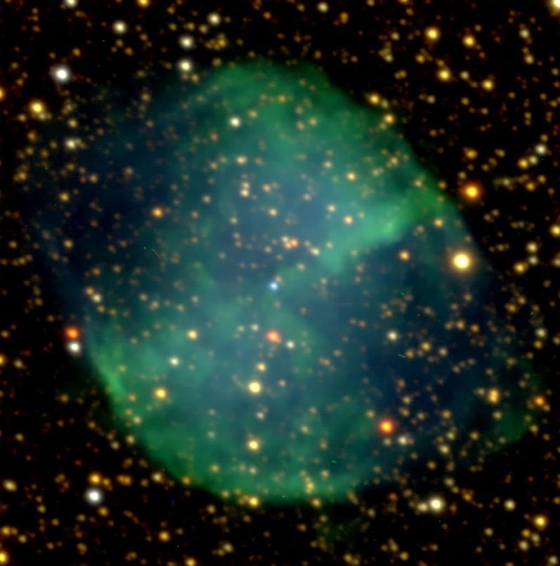
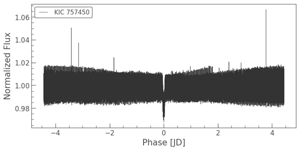
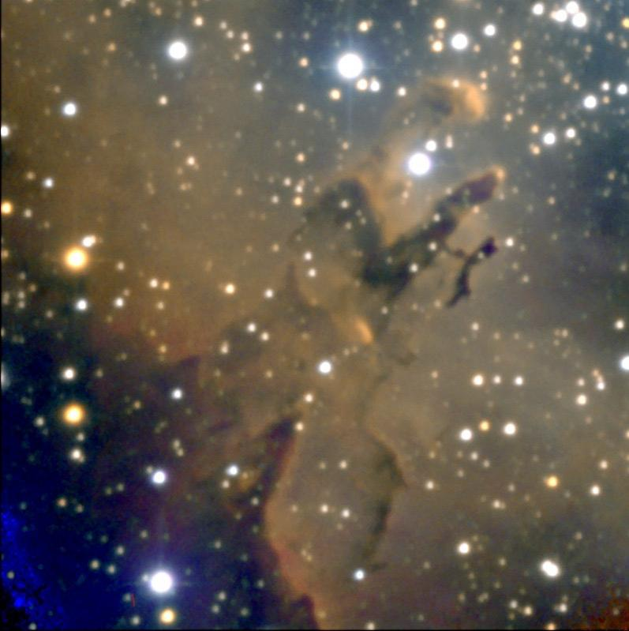
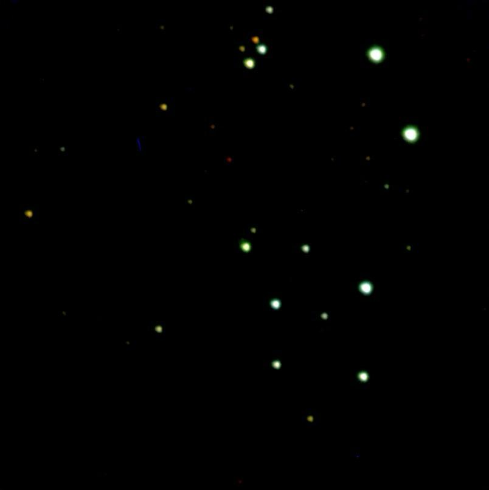
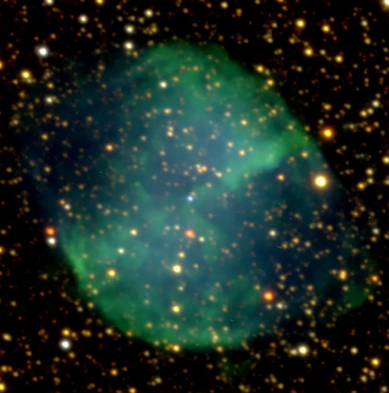
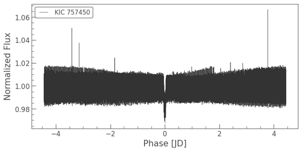
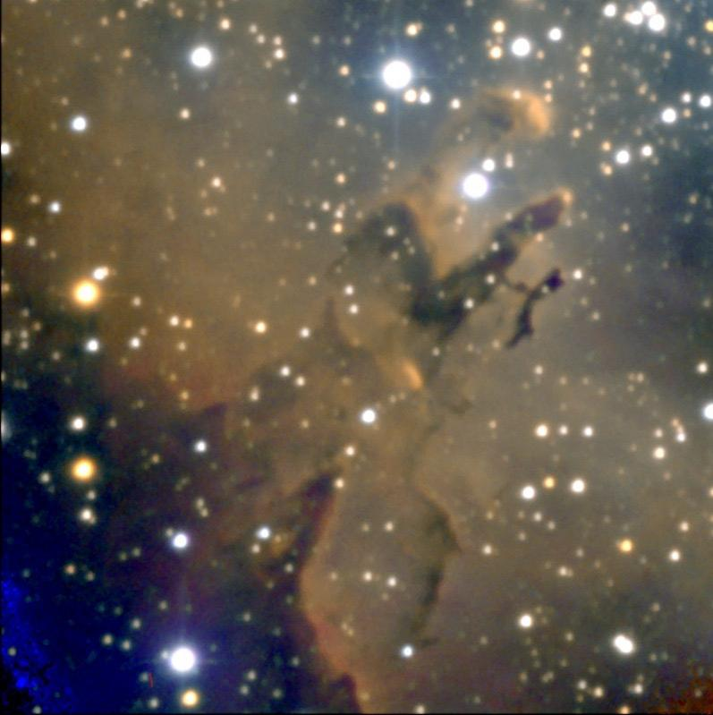
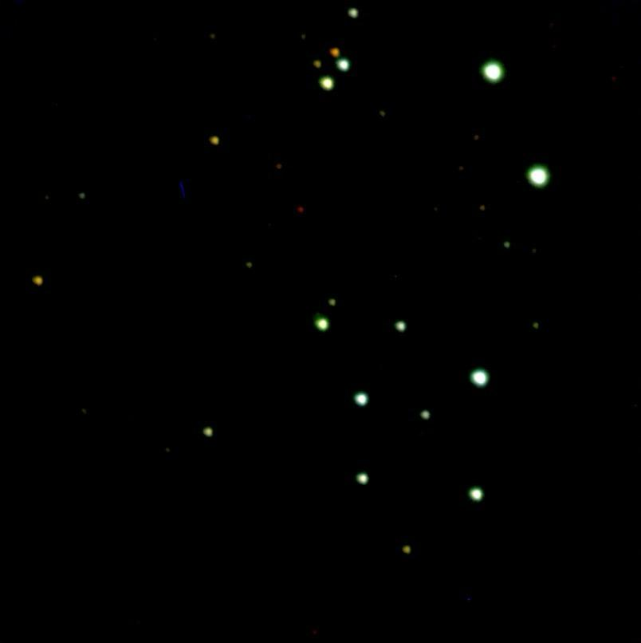

Detección de exoplanetas
Investigación en técnicas de aprendizaje profundo para identificar exoplanetas a partir de datos astronómicos.

 







Ingeniero informático · Máster en Astrofísica y Técnicas de Observación
Investigación en técnicas de aprendizaje profundo para identificar exoplanetas a partir de datos astronómicos.
Algoritmo basado en técnicas avanzadas para detectar cambios y dinámicas en la superficie terrestre utilizando datos satelitales.